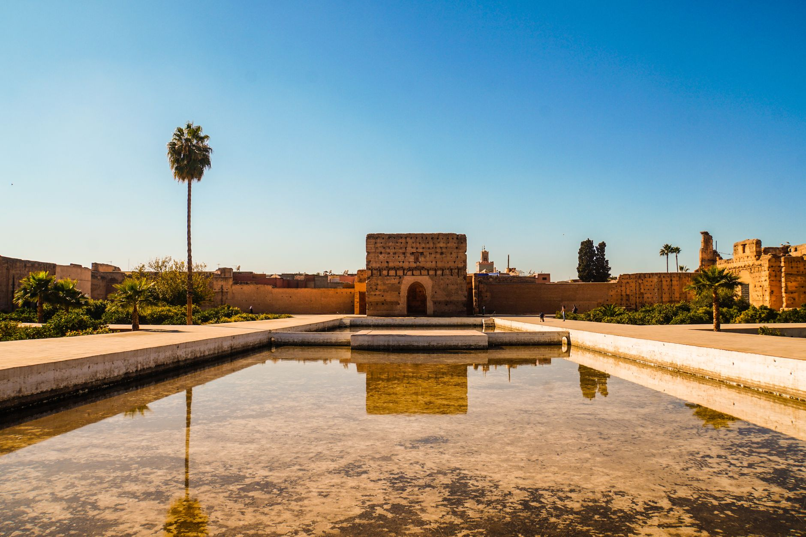

Marrakech → Essaouira · 6-day family itinerary
A moderate-paced Morocco route that gives Marrakech room to breathe, protects the coast transfer, and keeps the final departure morning deliberately light.

Checked before you commit
This is an illustrative route structure, not a live booking or availability check. It is designed around two bases, a protected inter-city move and a low-pressure departure buffer.
Planning boundary: dates and timing are illustrative. Opening a booking hub indicates intent only; it does not prove that a booking occurred.
Route logic and planning profile
Base pattern: three nights in Marrakech, two nights in Essaouira, with the sixth day reserved for departure. Keep luggage movement to one meaningful transfer and avoid turning Essaouira into a rushed day trip.
Fragile points: medina walking surfaces, heat, wind on the coast, road conditions and the onward airport/transfer window. If energy drops, shorten the ramparts or garden visit rather than adding another city.
Day 1 — Arrive gently, then meet the medina
After settling into the Marrakech base, keep the first walk short: use the Koutoubia and the edge of Jemaa el-Fnaa as a 17:00–19:00 orientation loop, then return for dinner before the family is overtired.
Fallback: If arrival is late or the heat is heavy, stay near the base and move the square to Day 2; confirm transfer and check-in details live.
Day 2 — Cluster the historic core around one shaded break
Start around 09:00 at Bahia Palace, continue toward the Mellah edge and finish through selected souk lanes before a shaded lunch. Keep the afternoon unscheduled for riad recovery rather than crossing the whole city again.
Fallback: If walking or access is difficult, stop after Bahia Palace and use a shorter neighbourhood meal route; confirm current opening and access conditions.
Day 3 — Choose garden calm or a shorter city afternoon
Use the morning for the Majorelle Garden area, ideally before the strongest heat, then pause for lunch and choose either Gueliz cafés or a full rest block. The decision keeps the day anchored without forcing a second cross-city circuit.
Fallback: If tickets, queues, weather or energy make the garden impractical, use a relaxed Gueliz breakfast-to-lunch route and preserve the afternoon buffer.
Day 4 — Protect the Marrakech → Essaouira move
Leave Marrakech with a generous morning road buffer and treat the journey to Essaouira as the day’s main decision. After check-in, use the harbour edge or a nearby meal rather than adding a second long excursion.
Fallback: If the road, weather or family energy shifts, travel directly to the base and defer the harbour circuit to Day 5; confirm the current transfer route, timing and luggage terms.
Day 5 — Harbour first, then choose the coast at family speed
Begin at the Essaouira harbour and Skala circuit, pause for a medina lunch, then decide between a beach walk and a shorter ramparts finish based on wind and energy. Keep the base close enough for an easy return.
Fallback: In strong wind or poor access conditions, make the medina food stop the anchor and return early; check current weather, coastal access and venue availability.
Day 6 — Leave room for the departure window
Keep breakfast near the Essaouira base, allow time for luggage and preserve the transfer buffer to the onward airport or next stay. This is not a sightseeing day unless the live departure window clearly allows it.
Fallback: If the onward connection is early or road conditions are uncertain, remove all sightseeing and protect the direct transfer; verify schedules, traffic, baggage rules and cancellation terms before booking.
Planning notes
Keep the route editable. Recheck current transfer schedules, opening hours, weather, accessibility, baggage rules, prices, cancellation terms and supplier availability at decision time. Alfred can help turn the profile, route and constraints into an editable itinerary, but a generated plan is not live verification and a booking-hub link is not proof of a booking.
Build the full plan in Alfred
Generate, validate and edit the complete itinerary in the Alfred app.